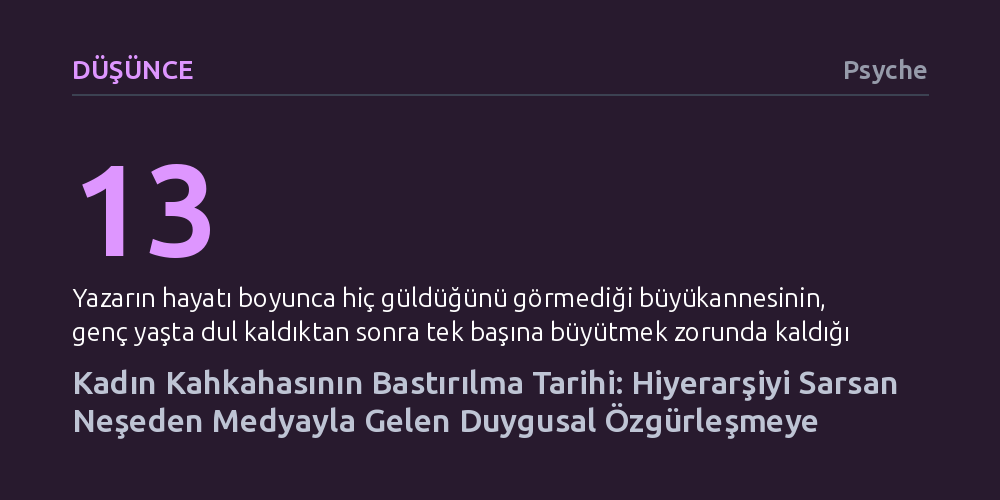

DUSUNCE · Psyche · 2026-09-12
Kadın kahkahası tarih boyunca kurulu hiyerarşiyi sarstığı gerekçesiyle tehlikeli bulunup bastırılmış; modern kitle iletişim araçları ise kadınlara bu duygusal özgürlüğü yeniden kazandırmıştır. Günümüzde siyasette ve iş hayatında süren örtük baskıya rağmen popüler medya, kahkahanın meşruiyetini kalıcı kılmıştır.
Gülmenin yalnızca bireysel bir neşe ifadesi değil, toplumsal hiyerarşileri ifşa ettiği için tarih boyunca siyaseten denetlenen ve ancak kitle kültürüyle özgürleşebilen bir direniş alanı olduğunu gösterir.

Yazar Abílio Almeida, Portekiz'in kuzeyinde genç yaşta dul kalıp 13 çocuğunu tek başına büyüten büyükannesi Tina'yı hatırlarken, yüzünde keder ve ciddiyet dışında hiçbir ifadeye tanık olmadığını anlatır. Çocukken büyükannesinin bu suskunluğunu ve duygusal mesafesini kişisel bir mizaç özelliği sanan yazar, Londra'daki eğitimi sırasında Suudi Arabistan'dan Japonya'ya kadar pek çok farklı kültürden insanın da benzer 'hiç gülmeyen büyükanne' anlatılarına sahip olduğunu fark eder. Bu durum bireysel bir tercih değil; kadınların doğuştan sahip oldukları en temel haklardan biri olan neşelerini ellerinden alan köklü bir toplumsal baskının sonucudur.
İnsan doğasının en kendiliğinden, masum ve birleştirici dürtülerinden biri sayılan kahkaha, konu kadınlar olduğunda tarih boyunca derin bir şüphe ve tedirginlikle karşılanmıştır. Kadınların gülüşünün kamusal alanda yakışıksız, edebe aykırı ve hatta ahlaki bir çöküş belirtisi olarak görülmesi, coğrafyalar değişse de ataerkil düzenin kadın bedenini ve duygulanımını kontrol altında tutma arzusunun ortak bir yansıması olarak karşımıza çıkar.
Gülmeye yönelik yasaklamalar çoğu zaman dini ve ahlaki saflık argümanlarıyla meşrulaştırılmıştır. Ortaçağ Hristiyan öğretisinde kahkaha, dünyevi zevklerin kontrolsüz bir dışavurumu ve manevi disiplinin bozulması olarak yorumlanmış; ancak bu ahlaki denetim kadınlar üzerinde daima erkeklere kıyasla çok daha sert işletilmiştir. Antik dönem düşünürlerinden Atinalı Athenagoras'ın kadını zevk almayan ve yalnızca tohum ekilen pasif bir 'toprak' olarak tanımlaması ya da Konstantinopolis Başpiskoposu İoannis Hrisostomos'un kadınların eşlerinin yanında gülmeye cüret edemeyişinden övgüyle bahsetmesi, Batı'daki kadınlık idealinin sessizlik ve duygusuzluk üzerine kurulduğunu gösterir.
Platon'dan bu yana Batı düşüncesinde akıl ve kutsallıktan uzaklaşma, kontrol kaybı olarak görülen kahkaha, hiyerarşik düzen için bir tehdit oluşturmuştur. Erkeğin Tanrı'ya, kadının ise erkeğe tabi olduğu bu dünyada, kadının serbestçe gülmesi düzeni sarsan bir meydan okuma sayılıyordu. 14. yüzyıldan 19. yüzyıl görgü kitaplarına kadar yayılan bu terbiye etme arzusu, zaman zaman 'kahkaha krizine girip kan kusarak ölen kadın' efsaneleriyle tıbbi bir korkuya dönüştürülmüş ve kadınlar kendi evlerinde dahi sesli gülmekten çekinir hale getirilmiştir.
Filozof Henri Bergson, 1900 tarihli ünlü 'Gülme' adlı eserinde kahkahanın toplumsal katılığın kırıldığı anı işaret ettiğini belirtir. Kahkaha, yapay biçimde inşa edilmiş toplumsal kuralların ve hiyerarşilerin üzerindeki ağırlığı birdenbire kaldıran, adeta bir camın kırılma anını andıran sestir. Bir köylü krala, bir işçi patronuna veya bir kadın kendisini sessizliğe mahkûm eden dünyaya güldüğünde, kurulu düzenin ne kadar yapay olduğu bir anda açığa çıkar; insan doğası toplumsal kurgunun önüne geçer.
Kadın kahkahasının bugün bile belirli çevrelerde yarattığı tedirginliğin kökeninde bu sarsıcı güç yatar. Günümüzde kimse kadınlara açıkça 'gülmeyin' demese de örtük baskılar varlığını sürdürmektedir. Örneğin 2019'da yapılan bir çalışma, iş yerinde mizah yapmanın erkeklerin saygınlığını artırırken kadınların statüsünü düşürdüğünü ortaya koymuştur. Benzer şekilde siyasette Hillary Clinton ve Kamala Harris gibi figürlerin kahkahalarının erkek siyasetçilerde görülmeyecek bir titizlikle ve önyargıyla eleştirilmesi, kadının kamusal alandaki neşesine duyulan tarihsel rahatsızlığın henüz tam olarak aşılamadığını kanıtlar.
Tarih boyunca bastırılan ve tehlikeli ilan edilen kahkaha, modern dünyada kendine en güçlü alanı yeni kitle iletişim araçlarıyla açmıştır. 20. yüzyılın başında sinemanın yükselişi, kadınların perdede gülen, eğlenen ve bundan ötürü herhangi bir cezaya uğramayan hemcinslerini görmelerini sağlamıştır. Beyaz perdedeki bu görünürlük, komedi türünün de etkisiyle kadınlara kahkahanın ölümcül değil, özgürleştirici ve meşru bir insani hak olduğunu sembolik olarak öğretmiştir.
Televizyon dizileri ve gündüz kuşağı programları ise bu duygusal demokratikleşmeyi doğrudan evlerin oturma odalarına taşımıştır. Seçkinci kültürün 'ucuz ve yüzeysel' bularak küçümsediği sabah programları ve komediler, aslında milyonlarca insan için bir duygusal okuryazarlık işlevi görmüştür. Yazarın büyükannesi de hayatının son evresinde, mutfakta izlediği neşeli sabah programları sayesinde içindeki o kadim utancı ve korkuyu aşarak nihayet yüzünü kapatmadan, özgürce kahkaha atmayı öğrenmiştir. Medya, yüzyıllardır kadınların içine çekildiği yalnızlığı dağıtarak onları kendi bedenleri ve duygularıyla yeniden barıştırmıştır.